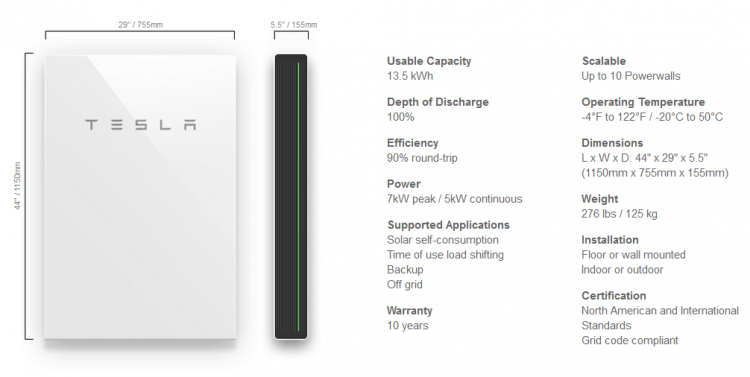
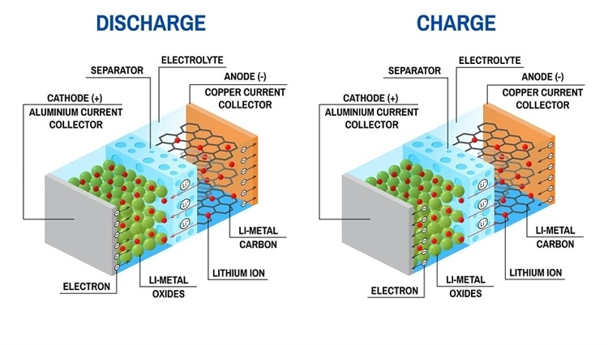
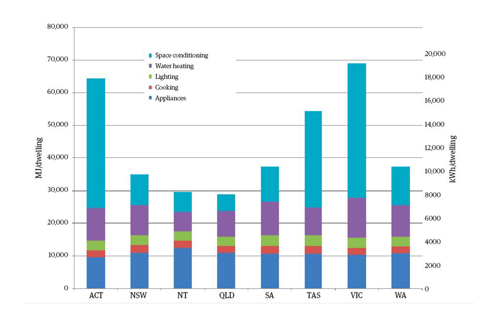

The Battle Against Climate Change
Climate change and environmental science is currently one of the world’s greatest influencers of research in chemistry. With the global rise in temperatures along with the increase of anthropogenic sources of pollution, scientists are racing to develop a cheap, clean and renewable source of energy. One promising solution is through solar panels, which harness the energy of the sun. While economically a worthwhile investment, solar technology is not as efficient as natural gas or fossil fuels. It can only convert a small amount of sunlight into electricity, and during night time, or cloudy days, no power can be generated at all. Furthermore, the majority of the power generation occurs during the day, while the peak energy usage time is at night, therefore some energy is wasted. These problems have influenced scientists to incorporate more electric storage technology in collaboration with solar technology. Infamous entrepreneur Elon Musk (Figure 1.0) and his company Tesla are part of this race for an efficient home battery storage unit. Their first product being the Powerwall in 2015, and the Powerwall 2.0 in 2017. It is described as “rechargeable lithium-ion battery with liquid thermal control”, and with further development, could reduce the negative effects of climate change.
Figure 1 - Elon Musk (Biography.com, 2019)

The Tesla Powerwall
The Tesla Powerwall is a large, rectangular shaped device that is capable of storing electrical energy generated by solar panels, and redistributing it to the parts of the house that need it. It is capable of storing up to 13.5kWh of electric power, and can be mounted on the wall, or stacked on the floor up to 10 times. It is also water-resistant and dustproof, allowing it to be installed both indoors and outdoors. There are no exposed wires or hot vents, making it both child and pet friendly as there are no outer components that can harm people. The Powerwall converts the electric power generated by the solar panels into an actuating current using an in-built inverter, and the power is then stored within the batteries. During the day, when the electricity produced by the solar panels exceeds the amount of power being used at the time, rather than sending the excess power to the grid, it is stored in the Powerwall. Later on, once the solar panels are no longer in use, the Powerwall becomes the main source of electricity in the house. None of these functions and applications would be possible without the innovative application and development of the Lithium Ion Battery.
Figure 2 - Tesla 2.0 Specs (Tesla, 2019)
Lithium Ion Batteries
Tesla’s innovative use of the Lithium Ion Battery is another example of influence. This is because the technology used was originally utilized in another product – their electric cars. However, through the sharing of data and research, they were able to incorporate the same technology into the Powerwall. Lithium ion batteries have many applications and are used in many devices such as phones, computers and electric cars. This is because of their rechargeable capabilities and because lithium is a small, light metal with high electrochemical potential. Like all batteries, Li-ion batteries have three main components – an electrolyte, negatively charged anode and positively charged cathode. The cathode is made up of a pure lithium metal oxide. There are many variations for this, such as Lithium-Cobalt-Oxide, Lithium-Phosphate, and Lithium-Manganese-Oxide which each have their own pros and cons. The lithium metal oxide used in the Tesla Powerwall is Lithium-Nickel-Manganese-Cobalt-Oxide (LiNiMnCoO2 or NMC) because it has high specific energy, low internal resistance, high charging rate, and good stability. The anode of all lithium ion batteries is usually graphite, a form of carbon. Finally, the electrolyte is made of a lithium solution, and serves as a transport medium for lithium ions. Connected to the anode and cathode are conductive metals (usually aluminium and copper) which allows for current flow between the two electrodes. In between the anode and cathode, there is a small separator, to prevent a short circuit. Fortunately, the separator is microporous, which means the lithium ions can pass through the separator to the other side.
Figure 3 (AZO Materials, 2017)
When a Li-ion battery is charged, a Redox reaction occurs. In the cathode, an oxidation reaction takes place, and the lithium metal oxide will lose electrons. These electrons travel through the conductive metal towards the anode. After losing electrons, the lithium atoms within the cathode will become an ion and dissolve into the electrolyte solution. Like the electrons, they will move towards the negatively charged anode, however they will travel through the electrolyte solution and separator instead of the conductive metals. The electrons from the cathode that are now in the anode will intercalate with the new lithium ions onto the graphite, where the electrons are stored until needed.
When the battery undergoes discharge and outputs electricity, it does basically the same thing. The main difference is the lithium ions and electrons are flowing from the anode to the cathode.
Environmental Implications
The Tesla Powerwall and all battery storage technology are extremely beneficial to the environment. Solar panels are much more effective and applicable when used in cooperation with an energy storage system. Once installed, the users reliance on power from the grid would reduce significantly. This would in turn reduce the usage of fossil fuels that are the main source of power generation for the grid. Subsequently, carbon emissions would decline resulting in cleaner, healthier air. The development and success of energy storage would also influence other researchers and scientists in renewable energy. The market for renewable energies would become more competitive, accelerating the developments of each technology. These sources of renewable energy would become increasingly cheaper, eventually becoming more widely used than fossil fuels or natural gas. This would also decrease the price of electric vehicles, gradually displacing the use of gasoline and diesel. All of these would contribute to the reduction of pollution and carbon emissions.
Economic Implications
In terms of bills and payments, purchasing and installing a Tesla Powerwall can result in several advantages and disadvantages. If the buyers utility has Time of Use (TOU) rates, there will be larger fees during hours of peak electricity demand. If the utility has demand charges, the bills are calculated from their total electricity usage. With energy storage, the electricity can be provided by the Powerwall during peak times, instead of relying on the grid, thus reducing energy bills. Despite this, at this point of time, Tesla Powerwalls are only cost-effective in certain places and circumstances. Just the initial purchase of the Powerwall 2.0 is $6700. Adding the supporting hardware is another $1100, and installing one can be anywhere between $2000-8000. For an effective result, 2-3 Powerwalls must be purchased, contributing to several thousand more dollars being added to the cost. While the Powerwall may become a rewarding investment in the future, at the moment there are too many limitations to consider it cost effective.
Limitations
The main limitation and disadvantage of the Tesla Powerwall is its energy output, which while promising, is not very efficient. Despite being able to store 13.5kWh of electrical energy, it only has the ability to discharge 5kWh of continuous output. This is not enough energy to completely power an average home, especially during peak hours. In Australia, depending the household size, type, energy mix, and lifestyle, the average energy consumption is about 12000 kWh per year. In one day, an approximate average of 32 kWh is used. This includes the usage of space conditioning, water heating, lighting, cooking, appliances and many more. One Powerwall alone could not power all this on its own.
Figure 4 – Energy Consumption Per Dwelling by End Use in 2014 (Paul Ryan, 2019)
Another limitation that affects all rechargeable batteries is that over time, the storage capacity will begin to degrade. This is due to the fact that in a Li-ion battery, lithium ions are frequently being inserted into the graphite anode, which eventually breaks it apart, reducing performance and efficiency. The Powerwall includes a 10 year warranty, indicating that it would be a decade before it begins losing efficiency, however in that time, the technology surely would have evolved, leaving the Powerwall 2.0 behind.
Conclusion
The Tesla Powerwall is an amazing piece of technology that uses advanced lithium ion batteries to store and output energy to and for your homes. It is promised by Elon Musk that this will be the technology of the future with many applications and benefits, including saving energy bills, reducing pollution and promoting clean sustainable energy. However, this technology still has many limitations, as it has low energy output, and is not yet cost effective. But this is only because it is only an early generation of this type of technology. When developed further, this device will have more positive social, environmental, and economic implications and truly change the world.